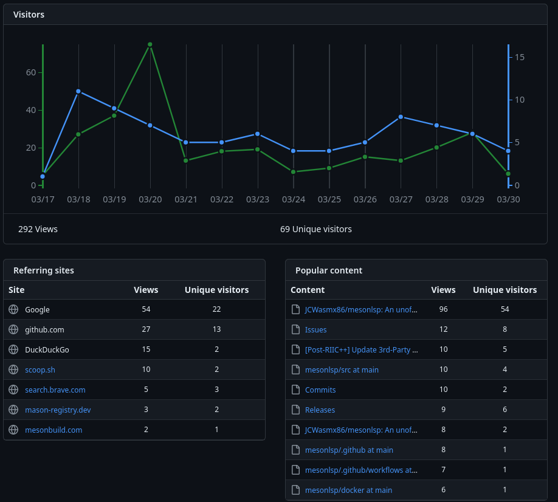
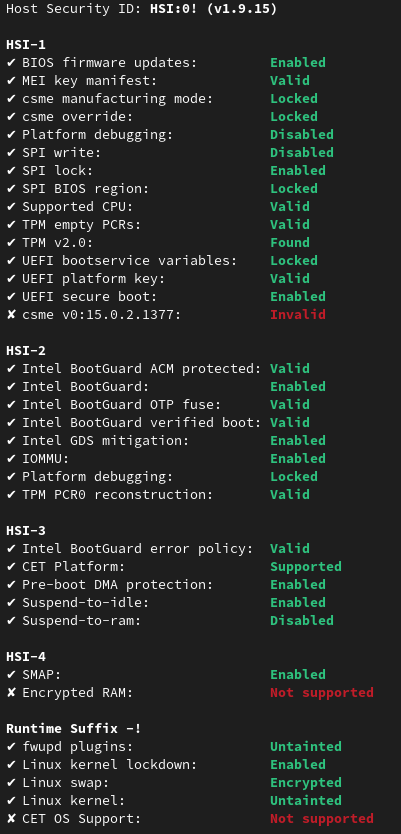

Less than three days ago, a backdoor in xz-utils was disclosed. It was quite sophisticated, planned for a long time, and only found through something even more unlikely than Bilbo's chance encounter with the One Ring in the depths of Gollum's cave.
As I am studying IT-Security, I thought analyzing ways mesonlsp could be used for attacks and outlining possible scenarios in which a compromised executable could damage systems would be an interesting exercise.
For Linux, there are two ways to install mesonlsp:
Use the statically linked binary (used by vscode-meson)
Use the package manager of your distribution (Fedora COPR, AUR, and soon nixOS)
There is only a nearly statically linked binary available, with a lot of libraries being built by the Homebrew team.
There is only a zip file available that contains mesonlsp.exe and a bunch of DLL files, all of which are built by the MSYS2 project.
A Meson project consists of basically three components:
Source code
meson.build files
Subprojects (*.wrap files)
The source code can be ignored for our purposes, as I don't even touch these files. In the following, I'll assume that the victim opens a project created by the attacker (e.g., for code reviews).
The first thing I do with these files is parse them. There are two ways to do this:
Using a tree-sitter based parser (somewhat deprecated/obsolete): This is a bunch of auto-generated opaque code written in C. I can only hope it's valid, but there can always be bugs with the code-generation of tree-sitter.
Using a custom parser (ported from muon and meson): These are hand-written ports of the lexer from muon and the parser from meson. They are written in C++, so not in a memory-safe language.
I will concentrate on the custom parser, as it's the default parser and I have more control over it.
If the attacker is able to trigger undefined behavior (e.g., out-of-bounds access/write) and exploit it,
it could be possible to execute arbitrary code or crash the server. Furthermore, the parser from muon is used for implementing the formatting of Meson files, so there may be potential vulnerabilities there as well.
The most critical component is the lexer, as it converts human-written free-form text (computers hate that!) into fancy tokens that are much easier to work with. Therefore, there may be bugs related to string handling. Using memory-unsafe languages for string handling is a recipe for a high-severity CVE (8.0+). I think the parser is less vulnerable, as it's basically just traversing the tokens and building a tree from them. In the worst case, it would probably just crash.
Subprojects allow developers to download and configure dependencies during the setup of the build directory. The most commonly used types are:
wrap-file: The code comes from a tarball, for example.
wrap-git: The code comes from a Git repository.
This means there are several ways things could fail.
For setting up this kind of wrap, the file must first be downloaded and then extracted.
The first part, the download, is done using libcurl.
It's a great project with responsible maintainers, but as it's written mainly in C, it can still have typical vulnerabilities.
(List of all curl CVEs)
So if there is, for example, a vulnerability in the handling of HTTP and an attacker makes mesonlsp download a file from a controlled server, it is possible that arbitrary code is executed or the language server is crashed.
Furthermore, I don't automatically upgrade from HTTP to HTTPS, as I want to follow the user's wishes. (But that is open to debate.)
After the download has finished, the file must be extracted. mesonlsp uses libarchive for this purpose. It's an abstraction around a few file formats and compression algorithms. It has seen a few vulnerabilities in the past, including remote code execution, such as in CVE-2024-20697. Each dependency also has its own vulnerabilities.
So if an attacker is capable of creating a crafted archive that allows overwriting files (using directory traversal due to bugs in my code) or triggers and exploits undefined behavior arbitrary code execution is possible.
As I'm just executing a few Git commands, any vulnerability like CVE-2021-21300 could cause arbitrary code execution or file overwrites.
Suppose the worst-case scenario happened: my GitHub account was taken over, or my computer is controlled by an attacker. At the current stage of development, I'm the only maintainer for this low-traffic repository:

On average, there are around 6 unique visitors every day, mostly coming from Google and GitHub. And as you can further see, most of the hits are on the README and the issues. So basically, nobody is looking through the code. And if the attacker was able to inject code and create a release, the following would happen:
The Mason registry would be updated within the next 24 hours (e.g., here).
The Scoop registry would be updated automatically (e.g., here).
The COPR would be updated.
The VSCode extension would be updated. (Currently not implemented for the C++ version, but TBD.)
The only human interaction is within the update of the VSCode extension. But as it only changes a version number and a few hashes, it wouldn't be suspicious at all and probably wouldn't cause any further review of the new distributed version.
At this point, probably more than 95% of all users would be infected, and that's it. Sure, the automated updates of everything are really cool (I would also do it), but it also shows how easily a compromised version could spread and cause damage.
Fedora users have it even worse: the attacker could even gain root access, as they have access to the RPM package and could simply execute post-install scripts as root. AUR users are impacted later, as I don't maintain the package, and with a bit of luck, the maintainer would see that the code has been tampered with.
In general, I made the decision to reduce the amount of pointer juggling and use shared_ptrs for basically everything (methods, AST, etc.). This reduces the number of possible mistakes and makes writing C++ feel like a garbage-collected language. The performance impact is probably noticeable, but currently, it's so fast that there is no optimization needed (for now, at least).
As part of my attempts to secure mesonlsp, I enabled a lot of compiler flags to harden the binary (source):
-D_FORTIFY_SOURCE=3: This is currently the highest level of fortifications, with checks at runtime.
-fstack-protector-strong: This option makes the compiler emit code to check for buffer overflows, etc.
-fstack-clash-protection: gcc only, so not on macOS.
-fcf-protection=full: "Enable code instrumentation of control-flow transfers to increase program security by checking that target addresses of control-flow transfer instructions (such as indirect function call, function return, indirect jump) are valid. This prevents diverting the flow of control to an unexpected target. This is intended to protect against such threats as Return-oriented Programming (ROP), and similarly call/jmp-oriented programming (COP/JOP)."
-mshstk: "Enables shadow stack built-in functions from x86 Control-flow Enforcement Technology (CET)." (source)
-Wl,-z,relro,-z,now: "Reorder the ELF internal data sections to protect them from being overwritten in the event of a buffer-overflow" (source)
Another way to find memory-safety bugs is to run sanitizers in CI. For each build type: debug, plain, release, I run tests and some other stuff with these sanitizers: address, undefined, leak, address,undefined. So all in all, I test 3 * 4 = 12 combinations. I'm aware that this will not find all bugs, as currently, my test coverage is far too low, but especially the lexer and the parser get "fuzzed" (in a very primitive manner, but it helped me find a few bugs already).
The last part of my efforts to secure mesonlsp is using static analysis tools: I use Sonarlint and clang-tidy to scan the codebase and find potential problems.
I found a few problems, but these were always more related to code style and best practices, so I can't judge how much value they bring for my project from a security perspective. (In general, they are useful, but I'm not sure about my specific case.)
My GitHub account is protected with 2FA and uses a long, securely generated password. The only systems where my GitHub account is active are:
My personal laptop: Uses Fedora 39 with Full-Disk-Encryption and Secure Boot. fwupdmgr security gives me a security level of HSI:0!:

Only the BIOS is a bit behind, because sadly my vendor (HP) doesn't integrate with fwupd for this kind of laptop.
My smartphone: I use a rooted smartphone with the GitHub app installed. Sadly, I'm a bit behind with system updates on my phone because I don't get system updates as long as I have root access. I think in the worst-case scenario that my GitHub account is compromised, it would be due to a vulnerability on my phone. (Assuming I don't download shady software on either device.)
The COPR and the AUR package are mostly statically linked, so if there's a vulnerability in a dependency, a normal system update should be enough. In case one of the few statically linked dependencies has a vulnerability, it still requires an update done by me.
The statically linked binary contains all dependencies, so that means in case of a vulnerability, I must create a new release.
The binary is statically linked, except for a few system libraries:
/usr/lib/libiconv.2.dylib (compatibility version 7.0.0, current version 7.0.0)
/usr/lib/libbz2.1.0.dylib (compatibility version 1.0.0, current version 1.0.8)
/usr/lib/libcurl.4.dylib (compatibility version 7.0.0, current version 9.0.0)
/usr/lib/libc++.1.dylib (compatibility version 1.0.0, current version 1600.151.0)
/usr/lib/libSystem.B.dylib (compatibility version 1.0.0, current version 1336.0.0)
So it would depend on the library that is vulnerable.
I ship all dependencies as DLLs, so it would still require me to push an update, as Windows doesn't have the concept of /usr.
At least for all of those vulnerabilities based on an attacker-controlled project, there is basically only one solution to reduce the number: rewriting in Rust. I wanted to do that initially, but decided to move to C++ instead. Maybe as a compromise, I could write critical components in Rust (e.g., the Lexer), but that would make the build more complex. Furthermore, I could look into replacing critical dependencies like libcurl and libarchive with pure Rust alternatives - as long as they expose a C(++) interface. Long-term, I think the solution will be Rust. I may not rewrite it this year or next year. But I don't know what I will do in 2026 or later.
Furthermore, I have to make it easier to see which version of a dependency was statically linked into a binary.
I already create an env.txt file for releases, but these are basically just a dump of the package manager state.
I think adding an overview to my GitHub Pages website and automatically updating it during the creation of the release would make it even easier.
The download of subprojects could be moved into one or several different processes.
For example, the process to download only needs to access the directory ~/.cache/c++-mesonlsp/downloadCache/ and the internet.
You could probably use technologies like Landlock and/or Bubblewrap to restrict writes to this directory only.
The extraction process should only be able to access the directories ~/.cache/c++-mesonlsp/downloadCache, ~/.cache/c++-mesonlsp/wrapsWorkspace, and all those patch directories in subprojects/.
The entire FLOSS ecosystem relies on a lot of trust and a bit of verification. I trust that the binaries from Homebrew, MSYS2, and Alpine Linux are genuine and not tampered with. They must trust upstream that the source they get isn't tampered with. Upstream must trust their dependencies, and so on. But the second trust is broken, the entire chain potentially falls apart. We trusted xz, a malicious entity added a backdoor, it got packaged, some adventurous users installed it. Only by chance, the backdoor was uncovered. Only thanks to a few distribution maintainers, it got delayed due to a few valgrind errors.
Sure, some scenarios for potential vulnerabilities I outlined are a bit hand-wavy or hard to exploit, but they are still valid attack vectors to compromise systems. Furthermore, my language server is still quite obscure, so attackers probably don't even know it exists. How many of you are auditing their dependencies? I'm sure at least a few do at least skim parts of the code, as full audits would take weeks to months and probably don't make sense outside of a few use cases. But how many of you are auditing their toolchains? I would assume that not that many people always check the code of the tools they use, e.g., the build system or language server. But if such vulnerability exists and is known by an attacker, it could have a huge impact.
There is no such thing as absolute security. A determined attacker can - given enough time - always compromise a system. They only have to be lucky once, while the defenders have to be lucky all the time. But we can make it more difficult for the attacker to make it not viable for attackers with not that many resources.